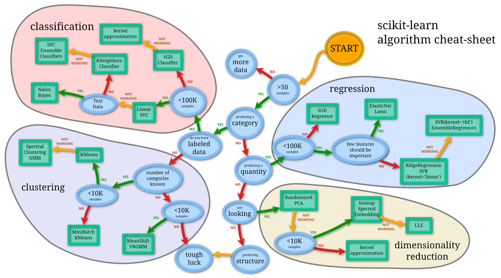

HTM
Buliding TRUELY intelligent machines
Created by Pascal Weinberger / @passiweinberger
Motivation
Machine Learning now has little to do with biological intelligence.
We can do better copying Nature!
Our Brain is Complex...
... in Structure:
Our Brain is Complex...
... in Time:
Our Brain is Complex...
... in Details:
Our Brain is Complex...
... in Details:

Our Brain is Complex...
... in Operations:

Our Brain is Complex...
... MORE!
Our Models are not...
None of the exsisting ML techniques are close,
or at least aim for modelling this complexity...
Statistical methods: Don't try
And Deep learning...
misses the horizontal and inhibitory constrains:

Combining Ideas
An idea for a synthesis:
Hierarchical Teporal Memory (HTM)
Using the constraints found in the brain
for Machine Intelligence.

HTM-Neurons recognize hunderts of patterns
Columnar Structure

Whole Cortex Flow Diagram

SDR - information formatting
Sparse Distributed Representations (SDR)the information storage in the cortex
How learning works

new temporal memory
Streaming Data-Analysis
Pre-filtering and focusing methods are needed
in the IoT and Big-Data era!
Streaming Data-Analysis
Data earlier:
- Static
- Batches
- Human-readable
- Small
Streaming Data-Analysis
Data now:
- Dynamic
- Streamed
- Unstructured
- Exponentically growing

HTM Use-Cases


HTM Use-Cases
Geospatial Tracking
HTM Use-Cases
Server Monitoring
HTM Use-Cases
Natural Language Processing


HTM Whitepaper
DO IT!
$ pip install nupic
$ python
>>> import nupic, sys
>>> print 'nupic' in sys.modules
True
>>> # Success!